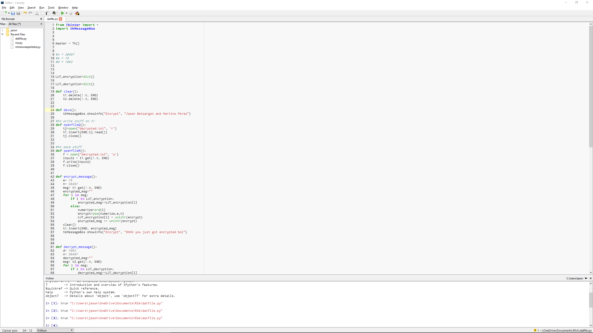
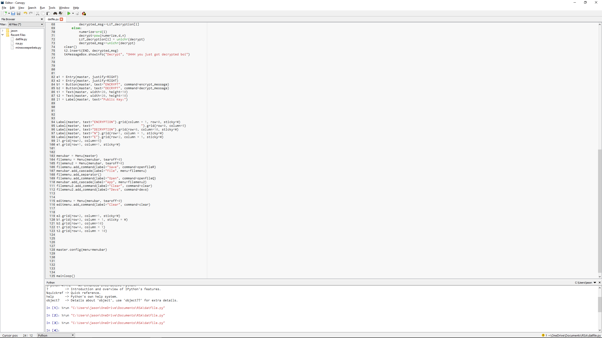

Here is a video of me showcasing my program.
In this project I focused on the functionality of the program. Most of my time was spent on programming functions that would allow the program to complete the desired tasks. The most difficutl part of this project for me was finding and fixing the many errors found in our encryption and decrytpion code. My favorite part of this project was designing the 4 options in the 2 menubars since their task was simple yet useful.
Above and below are screenshots of the entire code of the program.
